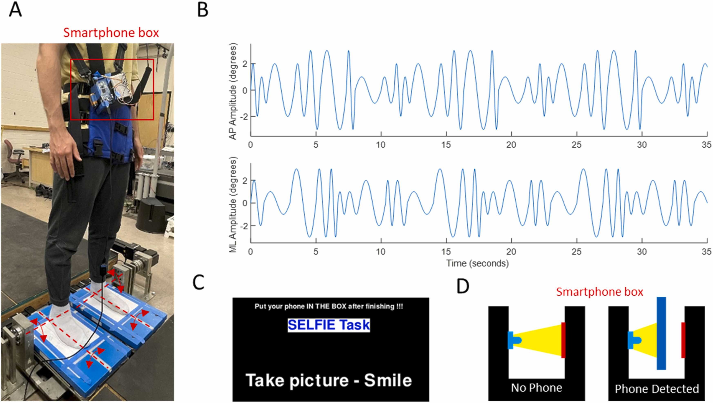

How humans coordinate digit forces to perform dexterous manipulation is not well understood. This gap is due to the use of tasks devoid of dexterity requirements and/or the use of analytical techniques that cannot isolate the roles that digit forces play in preventing object slip and controlling object position and orientation (pose). In our recent work, we used a dexterous manipulation task and decomposed digit forces into FG, the internal force that prevents object slip, and FM, the force responsible for object pose control. Unlike FG, FM was modulated from object lift onset to hold, suggesting their different sensitivity to sensory feedback acquired during object lift. However, the extent to which FG and FM can be controlled independently remains to be determined. Importantly, how FG and FM change as a function of object property is mathematically indeterminate and therefore requires active modulation. To address this gap, we systematically changed either object mass or external torque. The FM normal component responsible for object orientation control was modulated to changes in object torque but not mass. In contrast, FG was distinctly modulated to changes in object mass and torque. These findings point to a differential sensitivity of FG and FM to task requirements and provide novel insights into the neural control of dexterous manipulation. Importantly, our results indicate that the proposed digit force decomposition has the potential to capture important differences in how sensory inputs are processed and integrated to simultaneously ensure grasp stability and dexterous object pose control.

Modern smartphone usage can negatively impact postural balance while standing on dynamically challenging grounds
While several studies have explored the impacts of smartphone usage on postural balance, their tasks are limited to texting or calling, and the studies were performed on rigid ground. Research questions: 1. How does modern smartphone usage, specifically taking selfies or posting statuses on social media, affect balance? 2. How does their interaction with challenging ground conditions affect balance? Sixteen healthy young adults were recruited to perform two smartphone tasks: taking selfies and posting statuses on social media; participants were standing on four different grounds: rigid, foam-based compliant, robot-simulated compliant, and robot-simulated oscillatory grounds. The center-of-pressure (CoP) under each foot was recorded via force plates and the net CoP was calculated. Temporal, spatial, and control aspects of postural balance were analyzed by virtual time-to-contact (VTC), CoP path length (PL) and sway area (SA), and switching rate (SR), respectively. Two-way repeated measures analysis of variance (ANOVA) tests were per formed for each dependent variable to compare the mean differences between smartphone tasks and ground conditions and their interaction effect. Paired t-tests with Bonferroni correction were used to determine significant differences in post-hoc analyses. VTC decreased significantly whereas CoP PL and SA increased significantly during smartphone usage (all p-values <0.001). Interaction effects between task and ground condition (all p-values <0.001) were observed in all measures but SR, implying that the effect of smartphone usage on postural balance can significantly change depending on the ground condition. These results highlight the potential fall risks due to the impact of modern smartphone usage on standing balance. Understanding the effect of smartphone usage on standing balance and the interaction effect with various ground conditions opens the door for potential balance assistive devices and mobile phone applications to minimize falls.